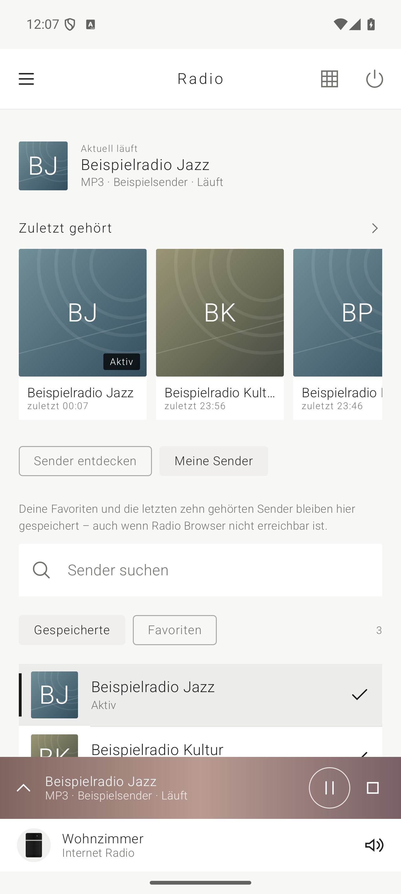

Im WLAN zu Hause.
Finde deine Lautsprecher automatisch im lokalen Netzwerk. Oder verbinde dich gezielt über eine IP-Adresse oder einen Hostnamen.
Für Android & Bose SoundTouch
Mach mehr aus deinen SoundTouch-Lautsprechern. Steuere deine Musik im WLAN, entdecke Radiosender und behalte deine Favoriten an einem Ort.
SoundFork entdecken
Weniger Umwege. Mehr Musik.
Eine übersichtliche Fernbedienung für deine SoundTouch-Lautsprecher. Vom ersten Ton bis zum nächsten Lieblingssender.
Finde deine Lautsprecher automatisch im lokalen Netzwerk. Oder verbinde dich gezielt über eine IP-Adresse oder einen Hostnamen.
Durchsuche das Verzeichnis von Radio Browser nach Name, Land, Sprache oder Genre. Passende MP3-Streams startet dein Lautsprecher direkt.
Speichere Favoriten und finde die letzten zehn gestarteten Sender wieder. Deine lokale Senderauswahl bleibt auch ohne erreichbares Verzeichnis verfügbar.
Bediene Wiedergabe, Lautstärke und Stummschaltung. Wähle verfügbare Quellen und Presets – passend zu den Funktionen deines Lautsprechers.
Verwalte SoundTouch-Zonen und füge unterstützte Lautsprecher zu einer Gruppe hinzu oder entferne sie wieder.
Auf dem Handy, Tablet oder Foldable: Navigation und Player passen sich dem verfügbaren Platz an. Mit hellem und dunklem Design.
So geht’s
Du brauchst SoundFork auf einem Gerät mit Android 14 oder neuer und einen erreichbaren Bose-SoundTouch-Lautsprecher.
Verbinde dein Android-Gerät und deinen SoundTouch-Lautsprecher mit demselben lokalen Netzwerk.
Starte die Netzwerksuche und erlaube die dafür angefragten Berechtigungen. Alternativ gibst du die Geräteadresse manuell ein.
Wähle einen Radiosender, einen Preset oder eine verfügbare Quelle. Für Internetradio braucht der Lautsprecher Internetzugang.
Gut zu wissen
SoundFork ist ein unabhängiges Projekt von Dominic Richter. Es besteht keine geschäftliche oder organisatorische Verbindung zu Bose. Bose und SoundTouch sind Marken ihrer jeweiligen Rechteinhaber.
Die lokale Lautsprechersteuerung benötigt eine Verbindung zum Lautsprecher im Netzwerk. Gespeicherte Sender lassen sich ohne Verzeichnissuche auswählen. Für die Online-Suche und für Internetradio ist weiterhin Internetzugang erforderlich.
Die Suche berücksichtigt MP3-Streams ohne HLS. Ob ein Stream auf deinem SoundTouch funktioniert, hängt zusätzlich von Sender und Gerät ab. SoundFork kennzeichnet einen Sender für das jeweilige Gerät als bestätigt, wenn der Lautsprecher die passende laufende Wiedergabe gemeldet hat. Das ist keine dauerhafte Wiedergabegarantie.
SoundFork richtet sich an Bose-SoundTouch-Lautsprecher mit erreichbarer lokaler SoundTouch-Schnittstelle. Funktionen hängen vom Modell und dessen Firmware ab. Andere Bose-Produktfamilien sind damit nicht automatisch kompatibel. SoundFork wird vom Entwickler regelmäßig mit einem Pixel-Telefon an einem SoundTouch-Radio getestet.
Ein unabhängiges Projekt von Dominic Richter